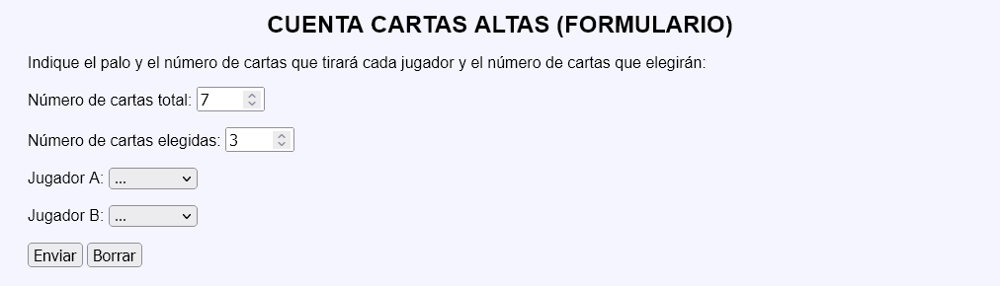
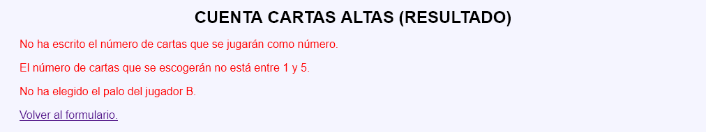
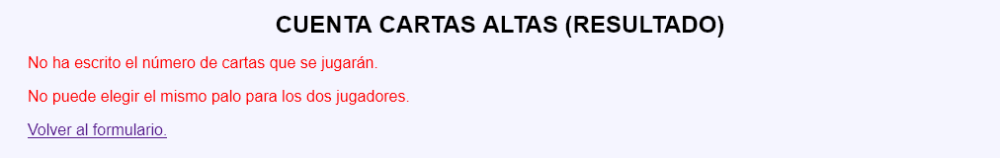
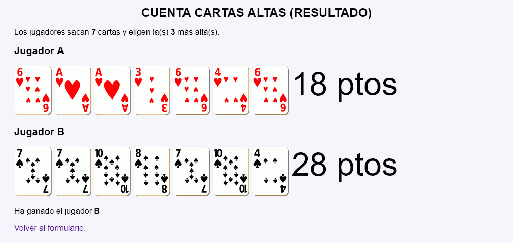

Cuenta cartas altas - Ejemplo de programa
Nota: El día del examen los alumnos no tienen acceso a este ejemplo, solamente tienen acceso a las capturas del apartado anterior.
Un ejemplo de programa puede probarse en la ventana siguiente:
En este ejercicio se debe crear un programa que simule un juego de cartas para dos jugadores.




<p>Los jugadores sacan <strong>7</strong> cartas y eligen la(s) <strong>3</strong> más alta(s).</p>
<h2>Jugador A</h2>
<p>
<img src="img/cartas/c6.svg" alt="c6" height="100">
...
<img src="img/cartas/c6.svg" alt="c6" height="100">
<span style="font-size: 400%; vertical-align: top">18 ptos</span>
</p>
<h2>Jugador B</h2>
<p>
<img src="img/cartas/p7.svg" alt="p7" height="100">
...
<img src="img/cartas/p4.svg" alt="p4" height="100">
<span style="font-size: 400%; vertical-align: top">28 ptos</span>
</p>
<p>Ha ganado el jugador <strong>B</strong></p>
Nota: El día del examen los alumnos no tienen acceso a este ejemplo, solamente tienen acceso a las capturas del apartado anterior.
Un ejemplo de programa puede probarse en la ventana siguiente: